(08) Gabor Stats#
Motivation: Fit log-gabor. Visualize stats. Device = cuda:0
# HIDE CODE
import os, sys
from IPython.display import display
# tmp & extras dir
git_dir = os.path.join(os.environ['HOME'], 'Dropbox/git')
extras_dir = os.path.join(git_dir, 'jb-vae/_extras')
fig_base_dir = os.path.join(git_dir, 'jb-vae/figs')
tmp_dir = os.path.join(git_dir, 'jb-vae/tmp')
# GitHub
sys.path.insert(0, os.path.join(git_dir, '_PoissonVAE'))
from analysis.eval import sparse_score
from figures.fighelper import *
from vae.train_vae import *
# warnings, tqdm, & style
warnings.filterwarnings('ignore', category=DeprecationWarning)
from rich.jupyter import print
%matplotlib inline
set_style()
Fig save dir#
fig_dir = pjoin(fig_base_dir, 'ccn_apr19')
os.makedirs(fig_dir, exist_ok=True)
print(os.listdir(fig_dir))
kws_fig = {
'transparent': True,
'bbox_inches': 'tight',
'dpi': 300,
}
['thetas.pdf']
Device#
device_idx = 0
device = f'cuda:{device_idx}'
model_type = 'poisson'
Load model#
tr, meta = load_model(
model_name='poisson_uniform_c(-3)_rmax(0.99)_DOVES_z-512_<lin|lin>',
fit_name='ep3600-b1000-lr(0.005)_beta(1:0x0.5)_temp(0.05:exp-1)_gr(500)_(2024_04_08,15:52)',
device=device,
verbose=True,
)
# params: 262.7 K
data, loss, rates = tr.validate()
_loss = {k: v.mean() for k, v in loss.items()}
_loss['tot'] = _loss['mse'] + _loss['kl']
dead_thres = 0.003
dead = loss['kl_diag'] < dead_thres
print(_loss, f"\n# dead neurons: {dead.sum()}\n")
{'mse': 136.95728, 'kl': 29.922113, 'kl_diag': 0.05776923, 'tot': 166.8794} # dead neurons: 2
Log-Gabor fit#
from analysis.eval import fit_loggabor
from figures.theta import plot_theta
results = fit_loggabor(tr, verbose=True)
100%|███████████| 512/512 [00:16<00:00, 31.85it/s]
results.loc[results['sf_0'] > 10, 'sf_0'] = np.nan
results.iloc[np.logical_or(dead, np.isnan(results['theta']))] = np.nan
results.describe()
| x_pos | y_pos | theta | sf_0 | phase | B_sf | B_theta | theta_deg | r_prior | |
|---|---|---|---|---|---|---|---|---|---|
| count | 507.000000 | 507.000000 | 507.000000 | 503.000000 | 507.000000 | 507.000000 | 507.000000 | 507.000000 | 507.000000 |
| mean | 7.496967 | 7.528738 | 0.022050 | 0.275196 | -0.103943 | 0.459654 | 0.389755 | 92.505989 | 0.317921 |
| std | 3.875077 | 4.213400 | 1.035318 | 0.136229 | 1.283574 | 0.247358 | 0.416870 | 46.962029 | 0.140208 |
| min | 0.316312 | 0.000196 | -1.570794 | 0.087685 | -4.207171 | 0.043200 | 0.054442 | 0.084587 | 0.003946 |
| 25% | 4.283920 | 3.767123 | -1.005787 | 0.225450 | -0.856374 | 0.347857 | 0.200212 | 57.255117 | 0.226569 |
| 50% | 7.577418 | 7.726885 | -0.005946 | 0.255651 | -0.210460 | 0.425285 | 0.306868 | 91.146899 | 0.351436 |
| 75% | 10.665793 | 11.219438 | 0.964709 | 0.287796 | 0.629225 | 0.504310 | 0.484241 | 122.984513 | 0.417173 |
| max | 14.441869 | 15.470516 | 1.570796 | 1.704270 | 3.673896 | 4.019392 | 7.456292 | 179.948821 | 0.639750 |
Make figs#
fig, _ = plot_theta(results)
fig.savefig(pjoin(fig_dir, 'thetas.pdf'), **kws_fig)
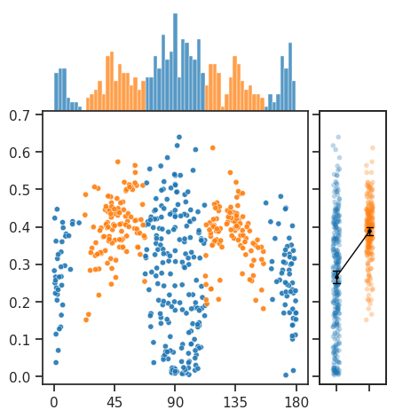
bin_width = 3.0
bins = np.linspace(
start=0,
stop=180 + bin_width,
num=int(np.ceil(180 / bin_width)) + 2,
) - bin_width / 2
bin_mid = np.deg2rad((bins[:-1] + bins[1:]) / 2)
axial_hist, _ = np.histogram(results.loc[results['label'] == 'axial', 'theta_deg'], bins)
oblique_hist, _ = np.histogram(results.loc[results['label'] == 'oblique', 'theta_deg'], bins)
fig, ax = create_figure(1, 1, (8, 5), dpi=120, subplot_kw={'polar': True})
ax.set_thetamin(0)
ax.set_thetamax(180)
ax.set_theta_direction(1) # Counter-clockwise
ax.set_theta_zero_location('E') # 0 degrees to the left
ax.bar(bin_mid, axial_hist, width=np.radians(bin_width), color='C0', edgecolor='none', label='Axial')
ax.bar(bin_mid, oblique_hist, width=np.radians(bin_width), color='C1', edgecolor='none', label='Oblique', bottom=axial_hist)
ax.legend(fontsize=9)
move_legend(ax, (0.992, 0.38))
ax.set_ylim((0, 25))
plt.show()
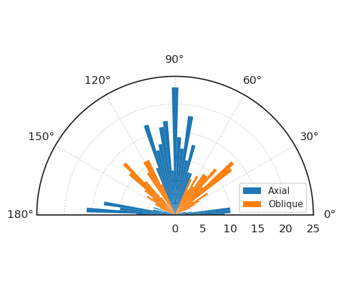
fig, axes = create_figure(1, 2, (8, 4), sharey='row', layout='constrained')
sns.scatterplot(data=results, y='sf_0', x='theta_deg', hue='label', ax=axes[0])
sns.scatterplot(data=results, y='sf_0', x='r_prior', hue='label', ax=axes[1])
plt.show()
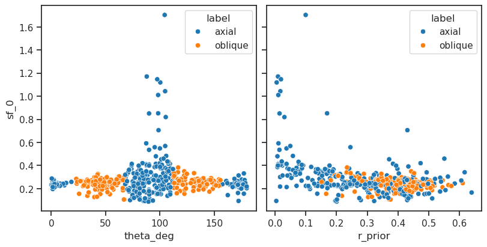
order = np.argsort(results['sf_0'].values)
_ = tr.model.show(order=order)
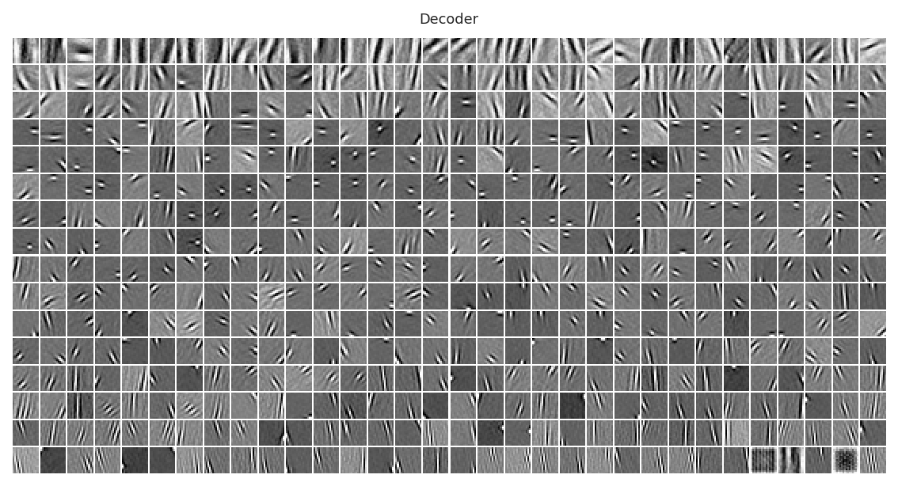
rates_axial = results.loc[(results['label'] == 'axial') & ~dead, 'r_prior'].values
rates_oblique = results.loc[(results['label'] == 'oblique') & ~dead, 'r_prior'].values
sp_stats.mannwhitneyu(rates_axial, rates_oblique, method='auto')
MannwhitneyuResult(statistic=15860.0, pvalue=1.636329366359182e-21)
sp_stats.mannwhitneyu(rates_axial, rates_oblique, method='exact')
MannwhitneyuResult(statistic=15860.0, pvalue=1.0021737972712317e-22)
sp_stats.ks_2samp(rates_axial, rates_oblique)
KstestResult(statistic=0.46489327811404907, pvalue=9.80885507957906e-25, statistic_location=0.32834205, statistic_sign=1)
High and low spatial frequencies#
w = to_np(tr.model.fc_dec.weight.data)
w = w.T.reshape(-1, 16, 16)
w.shape
(512, 16, 16)
inds = np.argsort(results['sf_0'].values)
plot_weights(w[inds[:16]], nrows=1, dpi=130)
plt.show()
plot_weights(w[inds[-21:-5]], nrows=1, dpi=130)
plt.show()
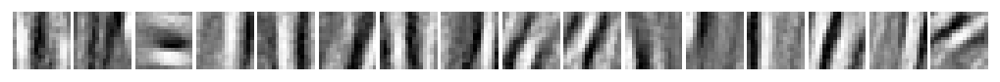
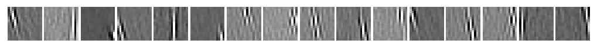
statistical tests#
rates_axial = results.loc[(results['label'] == 'axial') & ~dead, 'r_prior'].values
rates_oblique = results.loc[(results['label'] == 'oblique') & ~dead, 'r_prior'].values
sp_stats.mannwhitneyu(rates_axial, rates_oblique, method='auto')
MannwhitneyuResult(statistic=15860.0, pvalue=1.636329366359182e-21)
sp_stats.mannwhitneyu(rates_axial, rates_oblique, method='exact')
MannwhitneyuResult(statistic=15860.0, pvalue=1.0021737972712317e-22)
sp_stats.ks_2samp(rates_axial, rates_oblique)
KstestResult(statistic=0.46489327811404907, pvalue=9.80885507957906e-25, statistic_location=0.32834205, statistic_sign=1)
Older code#
from LogGabor import LogGaborFit
parameterfile = 'https://raw.githubusercontent.com/bicv/LogGabor/master/default_param.py'
lg = LogGaborFit(parameterfile)
lg.set_size((16, 16))
Fit lg#
w_dec = to_np(tr.model.fc_dec.weight.data)
w_fitted = np.zeros((w_dec.shape[1], 16, 16))
results = collections.defaultdict(list)
for i in tqdm(range(w_dec.shape[1]), ncols=50):
w = w_dec[:, i].reshape(lg.pe.N_X, lg.pe.N_Y)
try:
w_fitted[i], params = lg.LogGaborFit(w)
except ValueError:
for k in results:
results[k].append(np.nan)
continue
for k, v in params.items():
results[k].append(v.value)
results = pd.DataFrame(results)
100%|███████████| 512/512 [00:16<00:00, 31.46it/s]
fnialize results df#
theta = np.rad2deg(results['theta'])
theta[theta < 0] += 180
results['theta_deg'] = theta
results['r_prior'] = to_np(tr.model.log_rates.exp().squeeze())
results['r_posterior'] = rates['r*dr'].mean(0)
thres = 22.5
cond_axial = [
np.abs(np.rad2deg(results['theta'])) <= thres,
np.abs(np.rad2deg(results['theta']) - 90) <= thres,
np.abs(np.rad2deg(results['theta']) + 90) <= thres
]
cond_axial = functools.reduce(np.logical_or, cond_axial)
labels = ['oblique'] * len(results)
labels = np.array(labels)
labels[cond_axial] = 'axial'
results['label'] = labels
results.iloc[dead] = np.nan
vars(tr.model.cfg)
{'prior_log_dist': 'uniform',
'prior_clamp': -3.0,
'rmax_q': 0.99,
'type': 'poisson',
'enc_type': 'lin',
'dec_type': 'lin',
'enc_bias': False,
'dec_bias': False,
'dataset': 'DOVES',
'input_sz': 16,
'n_ch': 32,
'n_latents': 512,
'weight_norm': True,
'use_bn': False,
'use_se': True,
'res_eps': 1.0,
'activation_fn': 'swish',
'base_dir': '/home/hadi/Projects/PoissonVAE',
'results_dir': '/home/hadi/Projects/PoissonVAE/results',
'runs_dir': '/home/hadi/Projects/PoissonVAE/runs/poisson_uniform_c(-3)_rmax(0.99)_DOVES_z-512_<lin|lin>',
'save_dir': '/home/hadi/Projects/PoissonVAE/models/poisson_uniform_c(-3)_rmax(0.99)_DOVES_z-512_<lin|lin>',
'data_dir': '/home/hadi/Datasets',
'seed': 0}
tr.model.cfg.input_sz, tr.model.cfg.n_latents
(16, 512)
results
| x_pos | y_pos | theta | sf_0 | phase | B_sf | B_theta | theta_deg | r_prior | r_posterior | label | |
|---|---|---|---|---|---|---|---|---|---|---|---|
| 0 | 2.661679 | 12.199867 | -1.315022 | 0.332789 | -0.033961 | 0.372982 | 0.230339 | 104.654769 | 0.183950 | 0.188754 | axial |
| 1 | 3.994274 | 9.980048 | -1.364041 | 0.273259 | -2.856274 | 0.314068 | 0.192114 | 101.846192 | 0.121568 | 0.124454 | axial |
| 2 | 11.376751 | 1.395601 | 0.892880 | 0.203159 | 1.532183 | 0.505535 | 0.391709 | 51.158230 | 0.466552 | 0.495021 | oblique |
| 3 | 1.999348 | 9.728077 | 1.570796 | 0.175131 | 1.131820 | 0.357692 | 0.280810 | 90.000000 | 0.537100 | 0.538690 | axial |
| 4 | 2.555019 | 10.820092 | 0.610732 | 0.237549 | -0.488922 | 0.394305 | 0.548860 | 34.992355 | 0.328966 | 0.354256 | oblique |
| ... | ... | ... | ... | ... | ... | ... | ... | ... | ... | ... | ... |
| 507 | NaN | NaN | NaN | NaN | NaN | NaN | NaN | NaN | 0.005728 | 0.005718 | oblique |
| 508 | 8.714361 | 2.156840 | 0.050941 | 0.211498 | -0.369299 | 0.509231 | 0.589247 | 2.918715 | 0.232217 | 0.259950 | axial |
| 509 | 7.098429 | 14.234885 | 1.570796 | 0.178376 | -0.210460 | 0.215383 | 0.174096 | 90.000000 | 0.336270 | 0.336490 | axial |
| 510 | 7.839106 | 4.142432 | 1.328827 | 0.120408 | 1.800478 | 0.282073 | 0.154342 | 76.136187 | 0.368756 | 0.372877 | axial |
| 511 | 10.980449 | 8.508187 | 0.023389 | 0.214221 | 0.309421 | 0.389882 | 0.247281 | 1.340114 | 0.037581 | 0.048734 | axial |
512 rows × 11 columns
results.describe()
| x_pos | y_pos | theta | sf_0 | phase | B_sf | B_theta | theta_deg | r_prior | r_posterior | |
|---|---|---|---|---|---|---|---|---|---|---|
| count | 507.000000 | 507.000000 | 507.000000 | 503.000000 | 507.000000 | 507.000000 | 507.000000 | 507.000000 | 510.000000 | 510.000000 |
| mean | 7.496967 | 7.528738 | 0.022050 | 0.275196 | -0.103943 | 0.459654 | 0.389755 | 92.505989 | 0.316947 | 0.335759 |
| std | 3.875077 | 4.213400 | 1.035318 | 0.136229 | 1.283574 | 0.247358 | 0.416870 | 46.962029 | 0.141264 | 0.148070 |
| min | 0.316312 | 0.000196 | -1.570794 | 0.087685 | -4.207171 | 0.043200 | 0.054442 | 0.084587 | 0.003946 | 0.005163 |
| 25% | 4.283920 | 3.767123 | -1.005787 | 0.225450 | -0.856374 | 0.347857 | 0.200212 | 57.255117 | 0.224093 | 0.246582 |
| 50% | 7.577418 | 7.726885 | -0.005946 | 0.255651 | -0.210460 | 0.425285 | 0.306868 | 91.146899 | 0.351263 | 0.376503 |
| 75% | 10.665793 | 11.219438 | 0.964709 | 0.287796 | 0.629225 | 0.504310 | 0.484241 | 122.984513 | 0.417397 | 0.439100 |
| max | 14.441869 | 15.470516 | 1.570796 | 1.704270 | 3.673896 | 4.019392 | 7.456292 | 179.948821 | 0.639750 | 0.651168 |
fig, ax = create_figure(1, 1, (3, 3))
ax = sns.scatterplot(data=results, x='theta_deg', y='r_prior', hue='label', s=10)
move_legend(ax, (1.0, 1.04))
# ax_square(ax)
# ax.set_yscale('log')
ax.grid()
plt.show()
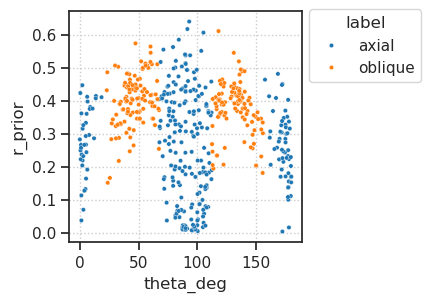
fig, axes = create_figure(1, 3, (10, 2.3), layout='constrained')
for i, bin_width in enumerate([1.0, 3.0, 5.0]):
ax = axes[i]
bins = np.linspace(
start=0,
stop=180 + bin_width,
num=int(np.ceil(180 / bin_width)) + 2,
) - bin_width / 2
sns.histplot(results['theta_deg'][cond_axial], bins=bins, color='C0', ax=ax)
sns.histplot(results['theta_deg'][~cond_axial], bins=bins, color='C1', ax=ax)
if i > 0:
ax.set(ylabel='')
ax.set(xlabel='')
plt.show()
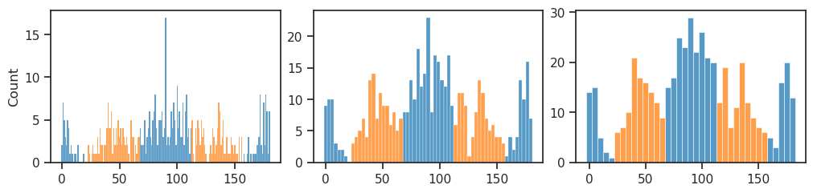
bin_width = 3.0
bins = np.linspace(
start=0,
stop=180 + bin_width,
num=int(np.ceil(180 / bin_width)) + 2,
) - bin_width / 2
bin_mid = np.deg2rad((bins[:-1] + bins[1:]) / 2)
axial_hist, _ = np.histogram(results['theta_deg'][cond_axial], bins)
oblique_hist, _ = np.histogram(results['theta_deg'][~cond_axial], bins)
fig, ax = create_figure(1, 1, (8, 5), dpi=120, subplot_kw={'polar': True})
ax.set_thetamin(0)
ax.set_thetamax(180)
ax.set_theta_direction(1) # Counter-clockwise
ax.set_theta_zero_location('E') # 0 degrees to the left
ax.bar(bin_mid, axial_hist, width=np.radians(bin_width), color='C0', edgecolor='none', label='Axial')
ax.bar(bin_mid, oblique_hist, width=np.radians(bin_width), color='C1', edgecolor='none', label='Oblique', bottom=axial_hist)
ax.legend(fontsize=9)
move_legend(ax, (0.99, 0.38))
ax.set_ylim((0, 25))
plt.show()
fig, ax = create_figure(1, 1, (3, 3))
sns.scatterplot(data=results, x='theta_deg', y='r_prior', hue='label', ax=ax)
move_legend(ax, (-0.2, 1.04))
# ax_square(ax)
# ax.set_yscale('log')
ax.grid()
plt.show()
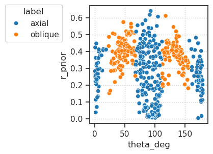
fig, ax = create_figure(1, 1, (1.4, 4))
axtw = ax.twiny()
palette = {'axial': 'C0', 'oblique': 'C1'}
sns.stripplot(data=results, y='r_prior', x='label', hue='label', palette=palette, alpha=0.5, ax=ax)
sns.pointplot(
data=results, y='r_prior', x='label', color='k',
legend=False, errorbar=('ci', 95),
capsize=0.2,
markers='o',
lw=2,
ax=axtw,
)
ax.set(xlabel='', ylim=(-0.02, 0.74))
axtw.set(xlabel='', xticks=[])
move_legend(ax)
ax.grid()
plt.show()
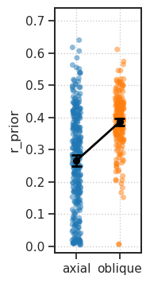
def plot_theta(df: pd.DataFrame):
fig = plt.figure(figsize=(5, 5.5), dpi=100)
gs = GridSpec(2, 2, width_ratios=[4, 1], height_ratios=[1.5, 4], hspace=0.0, wspace=0.07)
ax1 = fig.add_subplot(gs[0, 0])
ax2 = fig.add_subplot(gs[1, 0])
ax3 = fig.add_subplot(gs[1, 1])
ax1.set(xticks=[], yticks=[])
ax2.set(ylim=(-0.02, 0.71), xticks=[45 * i for i in range(int(np.ceil(180 / 45)) + 1)])
ax3.set(ylim=(-0.02, 0.71), xticklabels=[], yticklabels=[])
# histplot
bin_width = 1.0
bins = np.linspace(
start=0,
stop=180 + bin_width,
num=int(np.ceil(180 / bin_width)) + 2,
) - bin_width / 2
sns.histplot(df['theta_deg'][cond_axial], bins=bins, color='C0', ax=ax1)
sns.histplot(df['theta_deg'][~cond_axial], bins=bins, color='C1', ax=ax1)
remove_ticks(ax1)
# scatterplot
sns.scatterplot(data=df, x='theta_deg', y='r_prior', hue='label', alpha=0.9, ax=ax2)
ax2.set(xlabel='', ylabel='')
move_legend(ax2) # , (1.4, 1.3))
# ax2.set_xlabel(r"$\theta$", fontsize=14)
# ax2.set_ylabel('Prior firing rate', fontsize=14)
# stripplot
axtw = ax3.twiny()
palette = {'axial': 'C0', 'oblique': 'C1'}
sns.stripplot(data=df, y='r_prior', x='label', hue='label', palette=palette, size=4, alpha=0.3, ax=ax3)
sns.pointplot(
data=df, y='r_prior', x='label', color='k',
legend=False, errorbar=('ci', 95),
capsize=0.2,
markers='o',
lw=1,
ax=axtw,
)
ax3.set(xlabel='', ylabel='')
axtw.set(xlabel='', xticks=[])
move_legend(ax3)
plt.show()
results['label'].unique()
array(['axial', 'oblique', nan], dtype=object)
plot_theta(results)
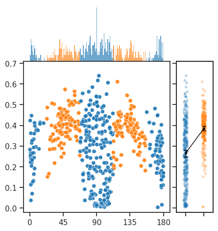
jg = sns.jointplot(
data=results,
x='theta_deg',
y='r_prior',
kind='scatter',
hue='label',
)
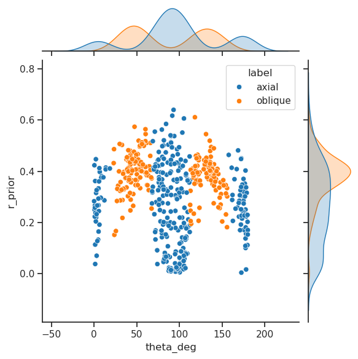
sp_stats.mannwhitneyu(
results.loc[results['label'] == 'axial', 'r_prior'],
results.loc[results['label'] == 'oblique', 'r_prior'],
)
MannwhitneyuResult(statistic=16475.0, pvalue=1.1119128388494627e-20)
def bootstrap_mean_diff(data1, data2, n_bootstrap=10000):
np.random.seed(42) # For reproducibility
bootstrapped_means_diff = []
for _ in range(n_bootstrap):
# Resample the data with replacement
sample1 = np.random.choice(data1, size=len(data1), replace=True)
sample2 = np.random.choice(data2, size=len(data2), replace=True)
# Calculate the difference in means
diff = np.mean(sample1) - np.mean(sample2)
bootstrapped_means_diff.append(diff)
return np.array(bootstrapped_means_diff)
bootstrapped_differences = bootstrap_mean_diff(rates_oblique, rates_axial, int(1e5))
confidence_interval = np.percentile(bootstrapped_differences, [2.5, 97.5])
confidence_interval
array([0.09883024, 0.14041884])
sns.histplot(bootstrapped_differences);
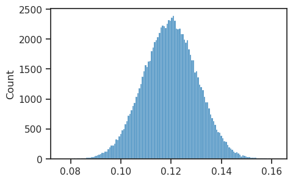
def permutation_test_mean_diff(data1, data2, n_permutations=10000):
actual_diff = np.mean(data1) - np.mean(data2)
combined = np.concatenate([data1, data2])
count = 0
null = []
for _ in range(n_permutations):
np.random.shuffle(combined)
new_data1 = combined[:len(data1)]
new_data2 = combined[len(data1):]
new_diff = np.mean(new_data1) - np.mean(new_data2)
null.append(new_diff)
if abs(new_diff) >= abs(actual_diff):
count += 1
# Calculate the p-value
pval = count / n_permutations
return pval, null
actual_diff = np.mean(rates_oblique) - np.mean(rates_axial)
pval, null = permutation_test_mean_diff(rates_oblique, rates_axial, int(1e6))
pval
0.0
fig, ax = create_figure(1, 1, (8, 2))
sns.histplot(null, label='Null distribution', stat='percent', kde=True)
ax.axvline(actual_diff, color='r', label=f'actual diff = {actual_diff:0.3f}')
ax.legend()
move_legend(ax, (1.0, 1.04))
plt.show()
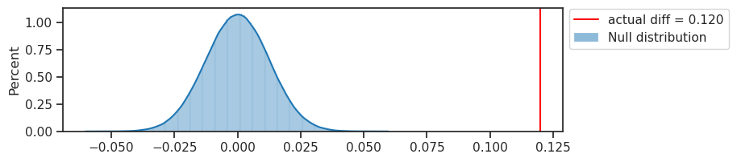
sns.histplot(results['sf_0']);
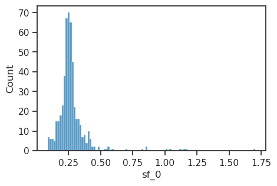
_df = results.loc[
(results['sf_0'] >= np.nanquantile(results['sf_0'], 0.03)) &
(results['sf_0'] <= np.nanquantile(results['sf_0'], 0.97))
]
sns.histplot(_df['sf_0']);
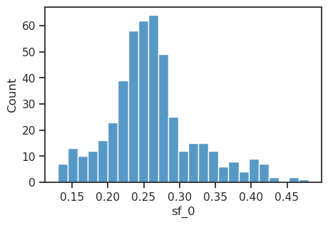
ax = sns.scatterplot(data=_df, x='theta_deg', y='r_prior', hue='label', size='sf_0') # size='sf_0', hue='label')
move_legend(ax, (1.0, 1.04))
ax_square(ax)
ax.grid()
plt.show()
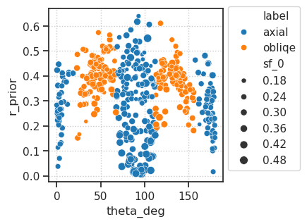
Find order#
prior_rates = tr.model.log_rates.exp()
prior_rates = to_np(prior_rates.squeeze())
order = np.argsort(prior_rates)
dead = dead[order]
prior_rates = prior_rates[order]
w_dec = to_np(tr.model.fc_dec.weight.data)[:, order]
tr.model.show(order=order, dpi=80);
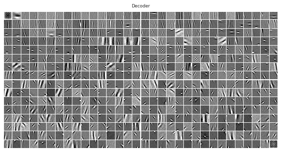
Log-Gabor fit#
from LogGabor import LogGaborFit
parameterfile = 'https://raw.githubusercontent.com/bicv/LogGabor/master/default_param.py'
lg = LogGaborFit(parameterfile)
lg.set_size((16, 16))
w_fitted = np.zeros((w_dec.shape[1], 16, 16))
results = collections.defaultdict(list)
for i in tqdm(range(len(w_fitted))):
w = w_dec[:, i].reshape(lg.pe.N_X, lg.pe.N_Y)
try:
w_fitted[i], params = lg.LogGaborFit(w)
except ValueError:
for k in results:
results[k].append(np.nan)
continue
for k, v in params.items():
results[k].append(v.value)
results = pd.DataFrame(results)
100%|████████████████████████████████████████████████████████████████████████████████████████████████████████████████████| 512/512 [00:15<00:00, 32.60it/s]
results.loc[results['sf_0'] > 10, 'sf_0'] = np.nan
results.describe()
| x_pos | y_pos | theta | sf_0 | phase | B_sf | B_theta | |
|---|---|---|---|---|---|---|---|
| count | 509.000000 | 5.090000e+02 | 509.000000 | 505.000000 | 509.000000 | 509.000000 | 509.000000 |
| mean | 7.490970 | 7.529115e+00 | 0.021979 | 0.274584 | -0.104459 | 0.461595 | 0.388619 |
| std | 3.869218 | 4.232228e+00 | 1.037945 | 0.136356 | 1.281073 | 0.249965 | 0.416443 |
| min | 0.316312 | 8.946313e-08 | -1.570794 | 0.061212 | -4.207171 | 0.043200 | 0.054442 |
| 25% | 4.285824 | 3.763320e+00 | -1.006108 | 0.224948 | -0.853815 | 0.347917 | 0.199437 |
| 50% | 7.536244 | 7.726885e+00 | -0.005946 | 0.255638 | -0.210460 | 0.426573 | 0.306779 |
| 75% | 10.665777 | 1.123755e+01 | 0.969348 | 0.287788 | 0.626138 | 0.505367 | 0.484223 |
| max | 14.441869 | 1.547052e+01 | 1.570796 | 1.704270 | 3.673896 | 4.019392 | 7.456292 |
show_weights(w_dec.T.reshape(-1, 16, 16), dpi=120);
show_weights(w_fitted, dpi=120);
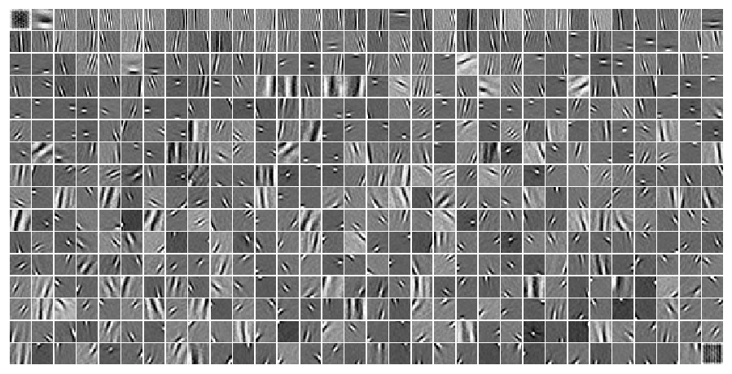
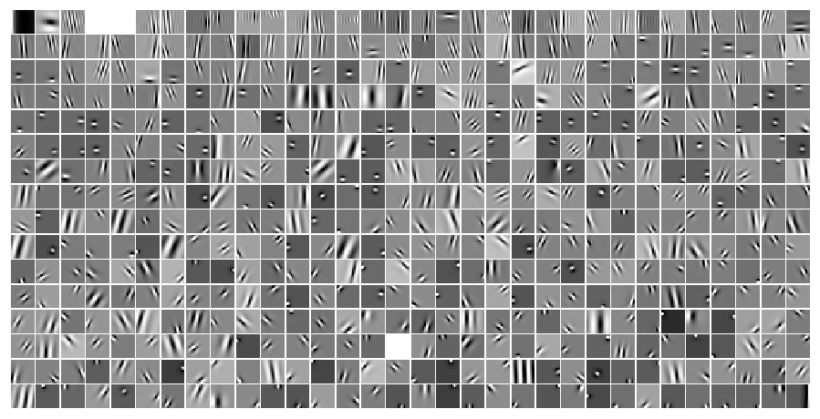
good = np.isfinite(results['theta'])
sp_stats.pearsonr(results['theta'][good], prior_rates[good])
PearsonRResult(statistic=0.07451211326770703, pvalue=0.09309906787357887)
sns.histplot(np.rad2deg(results['theta'])[:256], bins=np.linspace(-90, 90, 181))
sns.histplot(np.rad2deg(results['theta'])[-256:], bins=np.linspace(-90, 90, 181))
<Axes: xlabel='theta', ylabel='Count'>
thres = 22.5
theta = np.rad2deg(results['theta'])
cond_axial = [
np.abs(theta) <= thres,
np.abs(theta - 90) <= thres,
np.abs(theta + 90) <= thres
]
cond_axial = functools.reduce(np.logical_or, cond_axial)
cond_axial.sum()
294
fig, ax = create_figure(1, 1, (12, 3))
kws = dict(bins=np.linspace(-90, 90, 181), ax=ax)
sns.histplot(theta[cond_axial], label='Axial', **kws)
sns.histplot(theta[~cond_axial], label='Oblique', **kws)
ax.set(xlim=(-97, 97))
ax.locator_params(axis='x', nbins=20)
ax.legend()
plt.show()
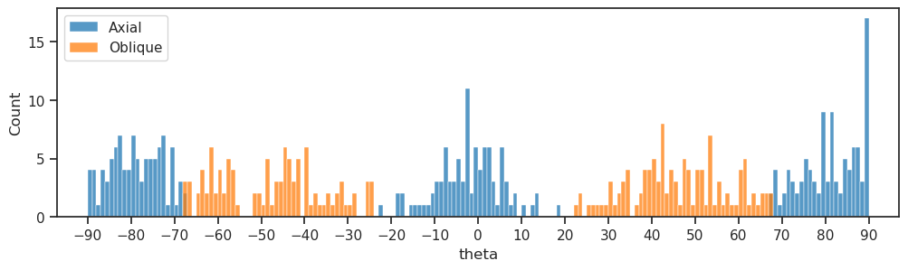
rates_axial = prior_rates[np.logical_and(cond_axial, ~dead)]
rates_oblique = prior_rates[np.logical_and(~cond_axial, ~dead)]
fig, ax = create_figure(1, 1, (8, 4))
kws = dict(bins=np.linspace(0, 0.7, 71), stat='percent', ax=ax)
sns.histplot(rates_axial, color='C0', label='Axial', **kws)
sns.histplot(rates_oblique, color='C1', label='Oblique', **kws)
ax.axvline(rates_axial.mean(), color='g', ls='--')
ax.axvline(rates_oblique.mean(), color='k', ls='--')
# ax.set_title(sp_stats.mannwhitneyu(rates_axial, rates_oriented))
ax.set_xlabel('Prior rates')
ax.legend()
plt.show()
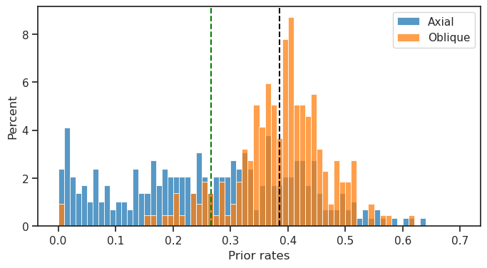
sp_stats.mannwhitneyu(rates_axial, rates_oblique)
MannwhitneyuResult(statistic=16475.0, pvalue=1.1119128388494627e-20)
sp_stats.ks_2samp(rates_axial, rates_oblique)
KstestResult(statistic=0.4580872188010557, pvalue=3.343932358328124e-24, statistic_location=0.32834205, statistic_sign=1)
def bootstrap_mean_diff(data1, data2, n_bootstrap=10000):
np.random.seed(42) # For reproducibility
bootstrapped_means_diff = []
for _ in range(n_bootstrap):
# Resample the data with replacement
sample1 = np.random.choice(data1, size=len(data1), replace=True)
sample2 = np.random.choice(data2, size=len(data2), replace=True)
# Calculate the difference in means
diff = np.mean(sample1) - np.mean(sample2)
bootstrapped_means_diff.append(diff)
return np.array(bootstrapped_means_diff)
bootstrapped_differences = bootstrap_mean_diff(rates_oblique, rates_axial, int(1e5))
confidence_interval = np.percentile(bootstrapped_differences, [2.5, 97.5])
confidence_interval
array([0.09883024, 0.14041884])
sns.histplot(bootstrapped_differences);
def permutation_test_mean_diff(data1, data2, n_permutations=10000):
actual_diff = np.mean(data1) - np.mean(data2)
combined = np.concatenate([data1, data2])
count = 0
null = []
for _ in range(n_permutations):
np.random.shuffle(combined)
new_data1 = combined[:len(data1)]
new_data2 = combined[len(data1):]
new_diff = np.mean(new_data1) - np.mean(new_data2)
null.append(new_diff)
if abs(new_diff) >= abs(actual_diff):
count += 1
# Calculate the p-value
pval = count / n_permutations
return pval, null
actual_diff = np.mean(rates_oblique) - np.mean(rates_axial)
pval, null = permutation_test_mean_diff(rates_oblique, rates_axial, int(1e6))
pval
0.0
fig, ax = create_figure(1, 1, (8, 2))
sns.histplot(null, label='Null distribution', stat='percent', kde=True)
ax.axvline(actual_diff, color='r', label=f'actual diff = {actual_diff:0.3f}')
ax.legend()
move_legend(ax, (1.0, 1.04))
plt.show()
list(results)
['x_pos', 'y_pos', 'theta', 'sf_0', 'phase', 'B_sf', 'B_theta']
sns.histplot(results['B_theta'])
<Axes: xlabel='B_theta', ylabel='Count'>
sns.histplot(results['B_sf'])
<Axes: xlabel='B_sf', ylabel='Count'>
tr.model.show(order=order[np.argsort(results['sf_0'].values)]);
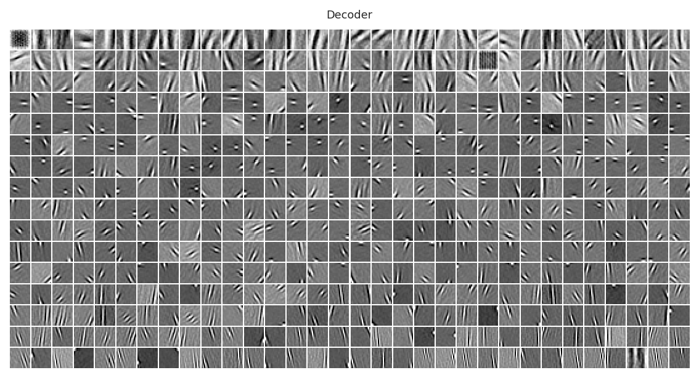
sns.scatterplot(data=results, x='theta', y='sf_0')
<Axes: xlabel='theta', ylabel='sf_0'>
ax = sns.scatterplot(data=results, x='theta', y='B_theta')
ax_square(ax)
<Axes: xlabel='theta', ylabel='B_theta'>
# Example data
data1 = np.random.normal(0, 1, size=100) # Group 1
data2 = np.random.normal(0.5, 1, size=120) # Group 2
# Perform bootstrap analysis
bootstrapped_differences = bootstrap_mean_diff(data1, data2)
# Calculate the 95% confidence interval
confidence_interval = np.percentile(bootstrapped_differences, [2.5, 97.5])
print(f"Bootstrap difference in means: {np.mean(bootstrapped_differences)}")
print(f"95% confidence interval for the difference in means: {confidence_interval}")
posterior_rates = rates['r*dr'].mean(0)[order]
rates_axial = posterior_rates[np.logical_and(cond_axial, ~dead)]
rates_oblique = posterior_rates[np.logical_and(~cond_axial, ~dead)]
fig, ax = create_figure(1, 1, (8, 4))
kws = dict(bins=np.linspace(0, 0.7, 71), stat='percent', ax=ax)
sns.histplot(rates_axial, color='C0', label='Axial', **kws)
sns.histplot(rates_oblique, color='C1', label='Oblique', **kws)
ax.axvline(rates_axial.mean(), color='g', ls='--')
ax.axvline(rates_oblique.mean(), color='k', ls='--')
# ax.set_title(sp_stats.mannwhitneyu(rates_axial, rates_oriented))
ax.set_xlabel('Prior rates')
ax.legend()
plt.show()
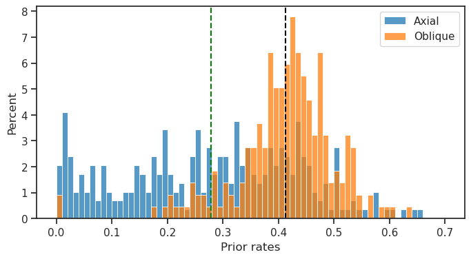
sp_stats.mannwhitneyu(rates_axial, rates_oblique)
MannwhitneyuResult(statistic=15190.0, pvalue=5.2343123185809626e-24)
sp_stats.ks_2samp(rates_axial, rates_oblique)
KstestResult(statistic=0.4878723136860626, pvalue=1.5725734075583065e-27, statistic_location=0.3479458, statistic_sign=1)
actual_diff = np.mean(rates_oblique) - np.mean(rates_axial)
pval, null = permutation_test_mean_diff(rates_oblique, rates_axial, int(1e6))
pval
0.0
fig, ax = create_figure(1, 1, (8, 2))
sns.histplot(null, label='Null distribution', stat='percent', kde=True)
ax.axvline(actual_diff, color='r', label=f'actual diff = {actual_diff:0.3f}')
ax.legend()
move_legend(ax, (1.0, 1.04))
plt.show()
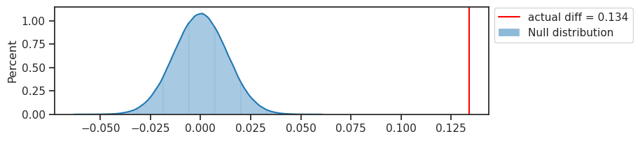
results
| x_pos | y_pos | theta | sf_0 | phase | B_sf | B_theta | |
|---|---|---|---|---|---|---|---|
| 0 | 2.661679 | 12.199867 | -1.315022 | 0.332789 | -0.033961 | 0.372982 | 0.230339 |
| 1 | 3.994274 | 9.980048 | -1.364041 | 0.273259 | -2.856274 | 0.314068 | 0.192114 |
| 2 | 11.376751 | 1.395601 | 0.892880 | 0.203159 | 1.532183 | 0.505535 | 0.391709 |
| 3 | 1.999348 | 9.728077 | 1.570796 | 0.175131 | 1.131820 | 0.357692 | 0.280810 |
| 4 | 2.555019 | 10.820092 | 0.610732 | 0.237549 | -0.488922 | 0.394305 | 0.548860 |
| ... | ... | ... | ... | ... | ... | ... | ... |
| 507 | NaN | NaN | NaN | NaN | NaN | NaN | NaN |
| 508 | 8.714361 | 2.156840 | 0.050941 | 0.211498 | -0.369299 | 0.509231 | 0.589247 |
| 509 | 7.098429 | 14.234885 | 1.570796 | 0.178376 | -0.210460 | 0.215383 | 0.174096 |
| 510 | 7.839106 | 4.142432 | 1.328827 | 0.120408 | 1.800478 | 0.282073 | 0.154342 |
| 511 | 10.980449 | 8.508187 | 0.023389 | 0.214221 | 0.309421 | 0.389882 | 0.247281 |
512 rows × 7 columns
list(results)
['x_pos', 'y_pos', 'theta', 'sf_0', 'phase', 'B_sf', 'B_theta']
fig, ax = create_figure(1, 1)
sns.scatterplot(data=results, x='x_pos', y='y_pos', s=10)
ax.set(xlim=(0, 15), ylim=(0, 15))
ax_square(ax)
plt.show()
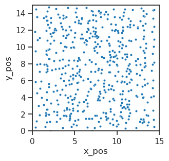
sns.histplot(results['sf_0'])
<Axes: xlabel='sf_0', ylabel='Count'>
sns.histplot(np.rad2deg(results['theta']), bins=np.linspace(-100, 100, 201))
<Axes: ylabel='Count'>
sns.histplot(results['theta'], bins=200)
<Axes: ylabel='Count'>
w_dec = to_np(tr.model.fc_dec.weight.data)
w = w_dec[:, 68].reshape(16, 16)
w_fitted, params = lg.LogGaborFit(w.reshape(lg.pe.N_X, lg.pe.N_Y))
fig, axes = create_figure(1, 2, (2.5, 1.5), layout='constrained')
axes[0].imshow(w, cmap='Greys_r')
axes[1].imshow(w_fitted, cmap='Greys_r')
axes[0].set_title('actual')
axes[1].set_title('fitted')
remove_ticks(axes)
plt.show()
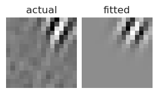
results = collections.defaultdict(list)
print(k, v, v.value)
x_pos <Parameter 'x_pos', value=2.2132997194753257 +/- 0.0776, bounds=[0:16]> 2.2132997194753257
y_pos <Parameter 'y_pos', value=11.265388297047544 +/- 0.0805, bounds=[0:16]> 11.265388297047544
theta <Parameter 'theta', value=1.0795873332083374 +/- 0.00925, bounds=[-1.5707963267948966:1.5707963267948966]> 1.0795873332083374
sf_0 <Parameter 'sf_0', value=0.3059553556156761 +/- 0.003, bounds=[0.001:inf]> 0.3059553556156761
phase <Parameter 'phase', value=-0.4221313698654539 +/- 0.157, bounds=[-inf:inf]> -0.4221313698654539
B_sf <Parameter 'B_sf', value=0.24854003367836264 +/- 0.0105, bounds=[0.001:inf]> 0.24854003367836264
B_theta <Parameter 'B_theta', value=0.24886799210535682 +/- 0.00909, bounds=[0.001:inf]> 0.24886799210535682
results
{'x_pos': array([2.21329972]),
'y_pos': array([11.2653883]),
'theta': array([1.07958733]),
'sf_0': array([0.30595536]),
'phase': array([-0.42213137]),
'B_sf': array([0.24854003]),
'B_theta': array([0.24886799])}
prior_rates = tr.model.log_rates.exp()
prior_rates = to_np(prior_rates.squeeze())
order = np.argsort(prior_rates)
prior_rates = prior_rates[order]
Ordered according to prior rates:
tr.model.show(order=order, dpi=120);
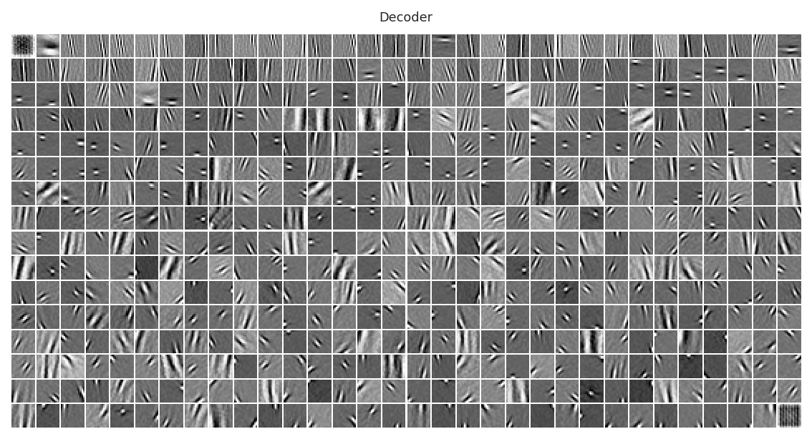
Ordered according to posterior rates:
tr.model.show(order=np.argsort(rates['r*dr'].mean(0)), dpi=120);
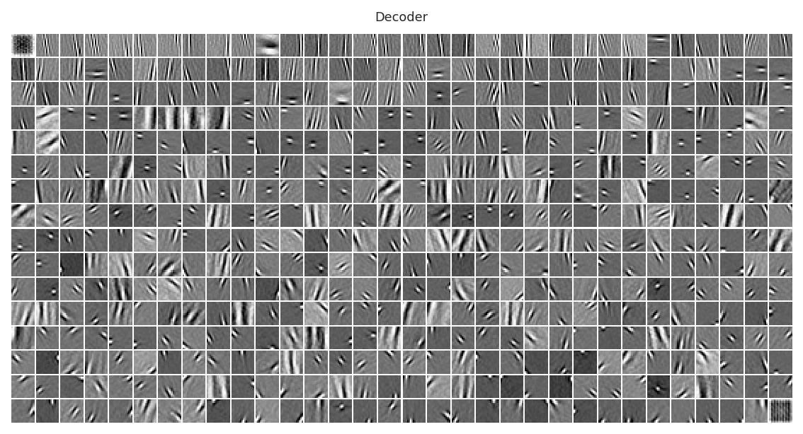
Log-gabor fit#
from LogGabor import LogGabor, LogGaborFit
parameterfile = 'https://raw.githubusercontent.com/bicv/LogGabor/master/default_param.py'
lg = LogGaborFit(parameterfile)
lg.set_size((16, 16))
x_pos, y_pos, theta, sf_0 = 7.6, 4.5, np.deg2rad(15), 0.3
data = lg.invert(lg.loggabor(x_pos, y_pos, sf_0=np.absolute(sf_0), B_sf=lg.pe.B_sf, theta=theta, B_theta=lg.pe.B_theta))
data /= np.abs(data).max()
data_noisy = data + 0.05 *np.random.normal(size=data.shape)
data_fitted, params = lg.LogGaborFit(data_noisy.reshape(lg.pe.N_X, lg.pe.N_Y))
print ('params :\n', params, '\n\ntrue :\n', x_pos, y_pos, theta, sf_0)
params : Parameters([('x_pos', <Parameter 'x_pos', value=7.61723307337675 +/- 0.0374, bounds=[0:16]>), ('y_pos', <Parameter 'y_pos', value=4.513634918317648 +/- 0.0662, bounds=[0:16]>), ('theta', <Parameter 'theta', value=0.2627202327443412 +/- 0.00363, bounds=[-1.5707963267948966:1.5707963267948966]>), ('sf_0', <Parameter 'sf_0', value=0.29825391310340466 +/- 0.00284, bounds=[0.001:inf]>), ('phase', <Parameter 'phase', value=0.03459756779963928 +/- 0.0658, bounds=[-inf:inf]>), ('B_sf', <Parameter 'B_sf', value=0.3720936988378031 +/- 0.0115, bounds=[0.001:inf]>), ('B_theta', <Parameter 'B_theta', value=0.16593586407543304 +/- 0.00317, bounds=[0.001:inf]>)]) true : 7.6 4.5 0.2617993877991494 0.3
cmap = 'viridis'
extent = (0, lg.pe.N_X, 0, lg.pe.N_Y)
fig, axes = create_figure(1, 3, (7, 2), sharey='all')
_ = axes[0].contourf(data.reshape(lg.pe.N_X, lg.pe.N_Y), 8, extent=extent, cmap=cmap, origin='upper')
_ = axes[1].imshow(data_noisy.reshape(lg.pe.N_X, lg.pe.N_Y), cmap=cmap, extent=extent)
_ = axes[2].contourf(data_fitted.reshape(lg.pe.N_X, lg.pe.N_Y), 8, extent=extent, cmap=cmap, origin='upper')
for ax in axes:
ax.axis('equal')
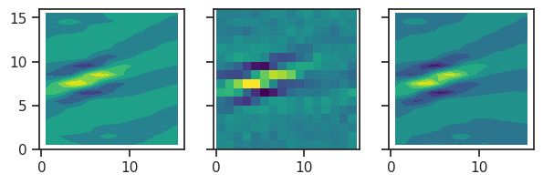
plt.imshow(data, cmap='Greys_r');
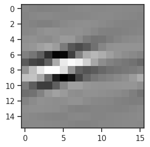
plt.imshow(data_fitted, cmap='Greys_r');
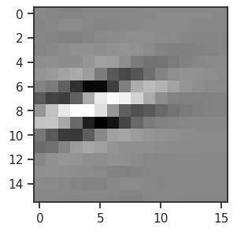